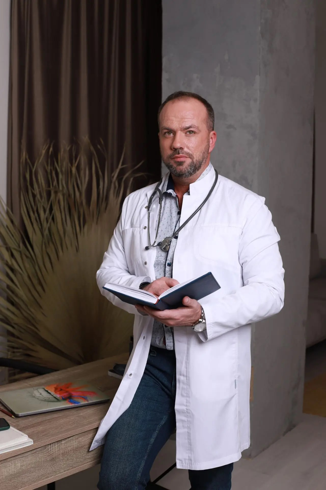

Приём травматолога-ортопеда
Обсуждение жалоб, осмотр, оценка движений и дальнейших шагов.
 Бесчастнов Дмитрий ВалерьевичТравматолог-ортопед · Москва
Бесчастнов Дмитрий ВалерьевичТравматолог-ортопед · Москва
Травматолог-ортопед
Помощь при травмах, боли в суставах и ограничении движения.

Консультация травматолога-ортопеда
Москва · Сормовская улица, 9
О враче
На приёме обсуждаются жалобы, обстоятельства появления боли и привычные нагрузки. Осмотр и результаты обследований помогают определить, нужна ли дополнительная диагностика и какой план действий уместен.
На сайте собрана справочная информация о распространённых травмах и состояниях опорно-двигательного аппарата. Она помогает подготовиться к разговору с врачом, но не заменяет осмотр и индивидуальные рекомендации.
Направление
Травматология и ортопедия
Основная задача
Оценка боли и движения
Формат
Очная консультация в клинике
Образование и повышение квалификации
Документы можно просмотреть во встроенном окне сайта.
Боль сама по себе не указывает на конкретную причину. Важны место и длительность симптомов, обстоятельства травмы, осмотр и, при необходимости, обследования. Выберите тему, чтобы прочитать подробнее.
Возможные причины боли, скованности и припухлости.
Подробнее →Что важно знать об изменениях суставов и их оценке.
Подробнее →Повреждения во время тренировки или игры.
Подробнее →Боль, отёк, нестабильность и ограничение движения.
Подробнее →Как оценивают травму и почему важна диагностика.
Подробнее →Частые причины дискомфорта при ходьбе и опоре.
Подробнее →Какие симптомы важно обсудить с врачом.
Подробнее →Дискомфорт при подъёме руки и движении.
Подробнее →Возвращение к нагрузке после травмы.
Подробнее →Боль бывает связана с непривычной нагрузкой, ушибом, повреждением связок или сухожилий, воспалительными и возрастными изменениями. По одному симптому нельзя определить причину.
Врач уточняет историю состояния, осматривает сустав и оценивает движения. Рентгенография, УЗИ, МРТ или другие исследования могут назначаться по клиническим показаниям.
Остеоартрит — состояние, при котором постепенно меняются ткани сустава. Симптомы и выраженность изменений могут различаться; снимок сам по себе не всегда объясняет уровень боли и ограничение движения.
Специалист оценивает симптомы, функцию сустава и результаты обследований. Варианты ведения подбираются индивидуально с учётом состояния, сопутствующих заболеваний и целей человека.
При спорте возможны ушибы, растяжения и разрывы связок, повреждения мышц и сухожилий, травмы мениска или кости. Подобные симптомы могут быть похожи, поэтому точное заключение требует оценки специалиста.
После беседы и осмотра врач определяет, нужны ли дополнительные исследования. Возвращение к спорту обсуждается постепенно, с учётом боли, силы, подвижности и контроля движений.
Связки помогают стабилизировать колено, а мениски участвуют в распределении нагрузки. Повреждение может возникнуть при резком повороте, приземлении, столкновении или другой нагрузке.
Врач уточняет механизм травмы и проверяет стабильность и объём движений. Решение об УЗИ, рентгенографии или МРТ принимается с учётом осмотра и показаний.
После повреждения могут появиться боль, отёк, синяк, ограничение движений или невозможность опереться на конечность. По внешнему виду не всегда можно отличить перелом от другого повреждения — обычно требуется осмотр и, по показаниям, визуализация.
При открытой ране, выраженной деформации, сильной боли, нарастающем отёке, онемении или бледности конечности нужна срочная медицинская помощь. При тяжёлой травме вызовите экстренную службу.
Дискомфорт может быть связан с нагрузкой на подошвенную фасцию, ахиллово сухожилие, мягкие ткани или кость. При подошвенной боли часто отмечают усиление симптомов при первых шагах после сна или отдыха.
Врач оценивает стопу, походку, болезненность и обстоятельства появления симптомов. Исследования назначаются по показаниям. Обнаруженный на снимке костный нарост не всегда является причиной боли.
Если боль мешает повседневным делам, сохраняется, усиливается или появилась после травмы, обсудите её с медицинским специалистом. Важны сопутствующие симптомы и история состояния.
Новая выраженная слабость или потеря чувствительности в ногах, онемение в области промежности, нарушения контроля мочеиспускания или кишечника, а также боль после серьёзной аварии требуют немедленной медицинской оценки.
Дискомфорт может быть связан с сухожилиями, суставной сумкой, мышцами, самим суставом или отражаться из шеи. После падения или резкого движения возможны травматические повреждения.
Врач оценивает плечо и соседние области, сравнивает движения и силу. УЗИ, рентгенография или другие исследования назначаются, если это поможет уточнить диагноз.
После травмы или операции важно постепенно возвращать подвижность, силу и привычную активность. Сроки и допустимая нагрузка зависят от конкретного состояния и рекомендаций лечащей команды.
Сообщите специалисту о нарастании боли, новом отёке, ухудшении функции или реакции, которая вызывает беспокойство. Не увеличивайте нагрузку через выраженную боль без согласования.
Длительность и необходимость процедур определяются индивидуально. Стоимость и порядок оказания услуг уточняйте в клинике.
Обсуждение жалоб, осмотр, оценка движений и дальнейших шагов.
Обсуждение динамики и уже выполненных обследований.
Исследование мягких тканей и структур сустава по показаниям.
Обсуждение показаний, возможных рисков и альтернатив.
Поддержка и подбор средств с учётом задачи и рекомендаций.
Оценка показаний и вариантов лечения после диагностики.
Обсуждение восстановления после травмы или операции.
Перечень не является обещанием оказания конкретной услуги. Решение принимается после оценки показаний.
Выберите документ для просмотра. Оригиналы PDF не открываются в новой вкладке и не предлагаются к скачиванию.
Что рассказать врачу и какие результаты обследований взять с собой.
Читать статью → ТРАВМЫМеханизм повреждения, отёк, нестабильность и другие детали для беседы.
Читать статью → ВОССТАНОВЛЕНИЕПочему план восстановления учитывает конкретное повреждение.
Читать статью →Материалы носят общий информационный характер и не заменяют консультацию специалиста.
Если есть результаты рентгенографии, УЗИ, МРТ, выписки или заключения других специалистов, возьмите их на приём. Не проходите новые обследования заранее без назначения.
Уточните предполагаемые причины симптомов, цель рекомендованных исследований, варианты действий, ограничения и признаки, при которых следует обратиться повторно.
Для врача важны направление движения, поворот или приземление, столкновение и момент появления боли. Также расскажите, услышали ли вы щелчок и появилась ли припухлость.
Отметьте, получается ли наступать на ногу, сгибать и разгибать колено, чувствуете ли вы нестабильность или блокирование движения. Эти сведения помогают спланировать осмотр.
При выраженной деформации, сильной боли, быстро нарастающем отёке, онемении или невозможности опереться на ногу обратитесь за срочной медицинской помощью.
Одинаковые симптомы могут сопровождать разные повреждения. Срок возвращения к работе, прогулкам и спорту зависит от диагноза, функции и рекомендаций лечащего специалиста.
Сообщите врачу, если после нагрузки заметно усиливаются боль или отёк, снижается подвижность либо появляются новые симптомы. Не увеличивайте нагрузку вопреки индивидуальным ограничениям.
Список будет дополнен после согласования названий организаций и формата взаимодействия.
Партнёр
Диагностика и обследование опорно-двигательного аппарата.
Партнёр
Восстановление функции по согласованному плану специалиста.
Москва, ул. Сормовская, 9
Пн–Пт: 09:00–20:00
Сб: 10:00–16:00
Вс: выходной
Телефон, электронная почта и часы работы — демонстрационные значения. Уточните их у клиники перед публикацией.